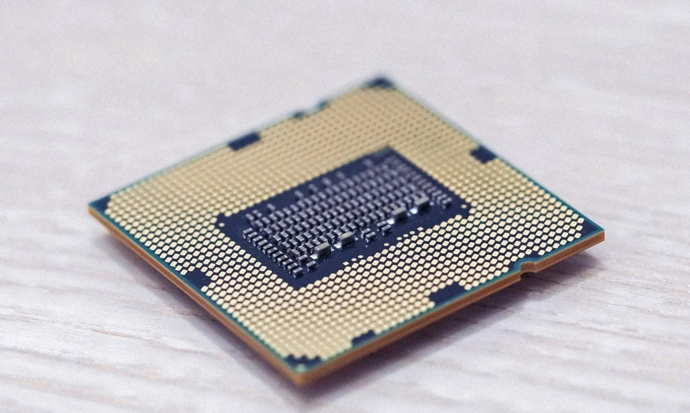

Memória Cache
Cache
Em resumo, a memória cache é uma parte do processador (CPU) de computadores e dispositivos móveis. Ele atua como uma memória temporária para que o chipset recupere rapidamente os dados, sem a necessidade de uma busca direta na memória principal (RAM).
O termo Cache também se refere à coleta de dados temporários de softwares e de hardwares. Por isso, é sempre recomendado reiniciar os dispositivos para realizar uma limpeza de cache e permitir que os aplicativos sejam carregados mais rápido.